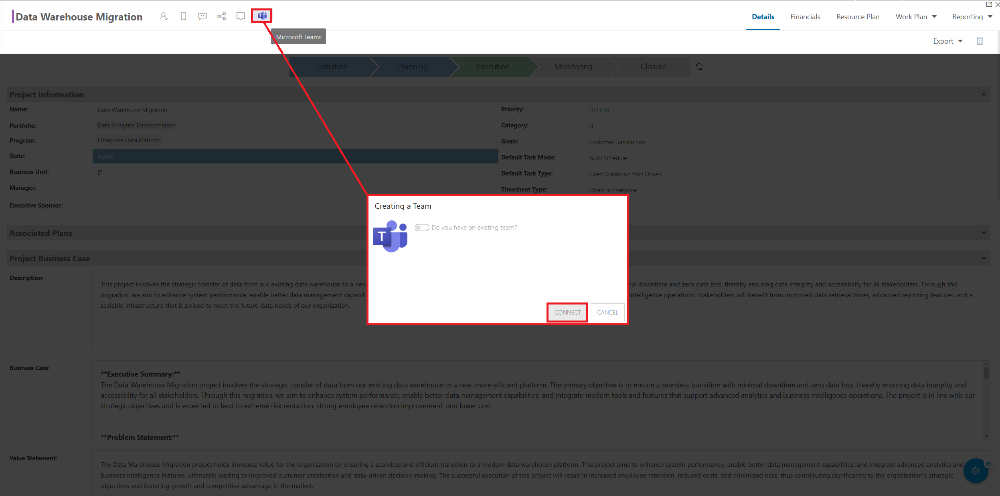

Microsoft Teams
OnePlan offers a Complete Project Portfolio Management solution for Microsoft Teams that enables project teams to stay connected and organized. With the OnePlan and Teams, users can define strategy, set priorities, capture requests, and execute projects all within one interface - Microsoft Teams.
Integrating OnePlan with Microsoft Teams offers an all-in-one solution that enhances collaboration, communication, and efficiency in project management. The seamless integration keeps team members on the same page with real-time updates and effective resource allocation while streamlining workflows. Combining OnePlan's customizable capabilities with Teams' user-friendly interface provides a unified platform that boosts productivity and delivers better project outcomes.
Want to learn more about the Teams integration? Check out our knowledge base.
This article explains how to enable the OnePlan integration with Microsoft Teams.
This integration allows you to set up connected Teams and/or Channels for your entire OnePlan group, or individual Plans. You can create new Teams or Channels for each Plan, or connect to existing Teams or Channels.
To successfully enable this integration, you need to be a OnePlan administrator, and be a Microsoft tenant administrator (to enable integrations).
Enable the OnePlan and Teams Integration
Go to the Admin pages > Microsoft Teams.
Click Enable Permissions.
Click Accept to enable OnePlan for Teams.
Next to "Enable teams integration", click Click Here. Allow the Teams integration events to install. Once installed, you are ready to configure how you want to connect OnePlan with Teams.

Team Creation Options Details
After enabling the Teams integration, a new set of configuration options will appear.
Auto Create: Check this box to automatically create a new Team in Microsoft Teams every time a Plan is created. This setting only creates Plan-level Teams, and only applies to Plans created after checking the check box.
Allow Creating Team: Check this checkbox to allow users manually to create Teams for Plans within Microsoft Teams.
Allow Existing Team: Check this checkbox to allow users to link plans in OnePlan to existing Teams or Channels. Checking this checkbox also allows you to create new Channels within an existing Team and/or connect to existing Channels within an existing Team.
Allow Creating Channel: Check this checkbox to allow users to manually create new Channels for their Plans within an existing Team. There is a 200 Channel limit per Team.
Allow Existing Channel: Check this checkbox to allow users to connect their Plans to an existing Channel within an existing Team. There is a 200 Channel limit per Team.
Auto Create Filter: Create a filter to determine when new Teams are created on Plan creation. You can use any available Plan-level field to create the filter.

This article explains how to auto create Plan-level Teams in Microsoft Teams using the OnePlan and Microsoft Teams integration.
To automatically create a new Team on Plan creation, the Auto Create feature needs to be enabled in the Teams integration settings. Additionally, the Allow Creating Team option needs to be selected in the Teams integration settings.

Now, when a user creates a new Plan, a new Team in Microsoft Teams will be automatically created with the same name as your OnePlan Plan. The member list for this Team is based on the users in the Share With form of the Plan.
In the Team, there will be a OnePlan tab in the Team General channel. This tab links you back to the Plan in OnePlan. User access to the plan is determined by their OnePlan permissions.

Auto Create Filter
You can also create a filters to determine when new Teams are auto-created. You can use any available Plan-level field to create the filter.
For example, I have created a filter that will launch the Team Auto Create if a new Plan is belongs to the IT Business Unit.

This article explains how to manually create Plan-level Teams in Microsoft Teams from within the OnePlan interface.
To allow users to create Teams for their Plans, the Allow Creating Team option needs to be selected in the Teams integration settings.
This article assumes that you are not using the Auto Create feature of the Teams integration. The Auto Create function will create a new Plan-level Team every time a new Plan is created.
Manually Create a Plan-Level Team from OnePlan
After enabling the Teams integration, each Plan in your environment will have a Teams icon in the Plan header. You can use this icon to create a new Team for your Plan.

In the OnePlan front end, navigate to a Plan.
From the Plan header, click the Teams icon. The Creating a Team form will open.
Since we are creating a new Team, and not connecting to an existing Team, ignore the "Do you have an existing team?" prompt and click Connect. The integration will go to work and create a new Team for the Plan.
Once the integration is done setting up, the Connected System form will open. Click Open Item to go to the new connected Team.
A new Team is created with the same name as your OnePlan Plan. The member list for this Team is separate from the Share With form and is maintained on the Teams end.
This article explains how to create a Team for an entire OnePlan Group within your Microsoft Teams instance. You must be a OnePlan administrator and a Teams administrator.
Go to the Admin pages > Microsoft Teams.
Click Click Here to create a new Group-level team in your Teams instance.

In Teams, a new Team is created with the same name as your OnePlan Group.
This article explains how to connect a OnePlan Plan to an existing Team in Microsoft Teams.
When connecting to an existing Team in Microsoft Teams, the OnePlan integration allows users to either connect to an existing Channel within that Team (i.e. connect the Plan to the General) or create a new Channel within the Team. We will walk through each scenario in this article.
Connect to an Existing Team and Create a New Plan Channel
To allow users to connect Plans to existing Teams and create a Channel within the Plan, the Allow Existing Team and Allow Creating Channel options needs to be selected in the Teams integration settings.

In the OnePlan front end, navigate to the desired Plan.
From the Plan header, click the Teams icon. The Creating a Team form will open.
Since we want to connect this Plan to an existing Team in Microsoft Teams, click the "Do you have an existing team?" switch. A couple more settings will appear.
Search for and select the Team you would like to connect the Plan to. Begin typing in the name of the Team, and select from the results.

We do not want to connect to an existing Channel within the Team, so ignore the "Do you have an existing channel" option.
Click Connect. The integration will create a new Channel with the same name as the Plan within the selected Team. When a user clicks the Teams icon in the Plan header > Open Item, the selected Team > Channel will open in a new tab.
Connect to an Existing Team and an Existing Channel
Connect to an Existing Team and an Existing Channel To allow users to connect Plans to existing Teams and connect an existing Channel within the Team, the Allow Existing Team and Allow Existing Channel options needs to be selected in the Teams integration settings.

In the OnePlan front end, navigate to the desired Plan.
From the Plan header, click the Teams icon. The Creating a Team form will open.
Since we want to connect this Plan to an existing Team in Microsoft Teams, click the "Do you have an existing team?" switch. A couple more settings will appear.
Search for and select the Team you would like to connect the Plan to. Begin typing in the name of the Team, and select from the results.
Since we want to connect to an existing Channel within the Team, click the "Do you have an existing channel" switch. A couple more settings will appear.
Search for and select the Channel you would like to connect the Plan to. Begin typing in the name of the Channel, and select from the results.

Click Connect. The integration will connect the Team and Channel with the Plan. When a user clicks the Teams icon in the Plan header > Open Item, the selected Team > Channel will open in a new tab.
For more information on how to use OnePlan with Microsoft Teams, please check out the following resources: